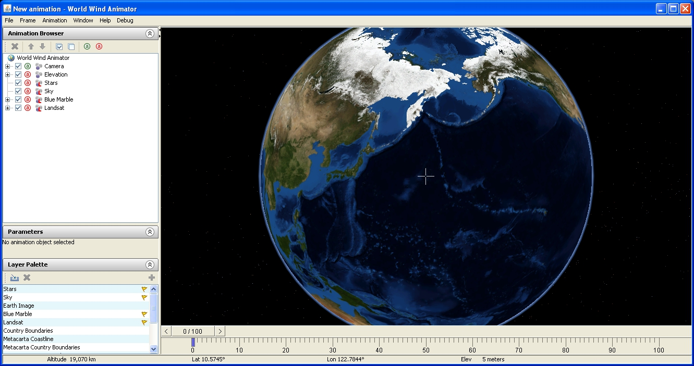
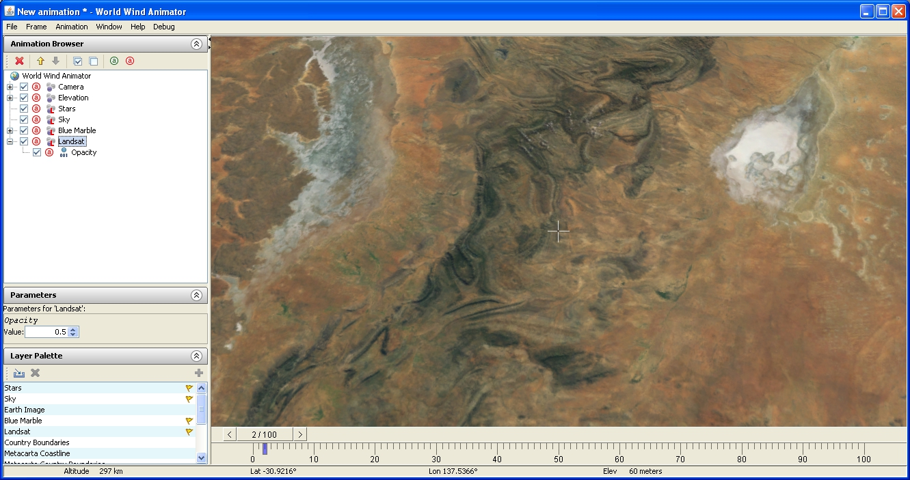
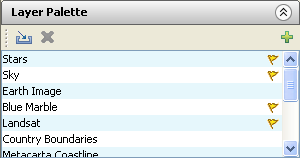
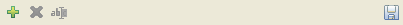
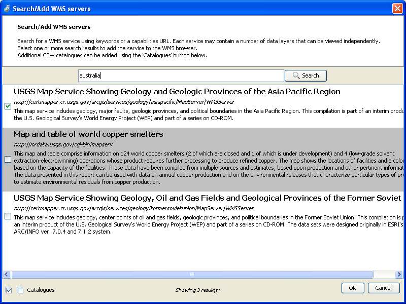
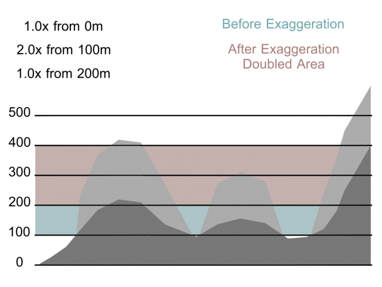
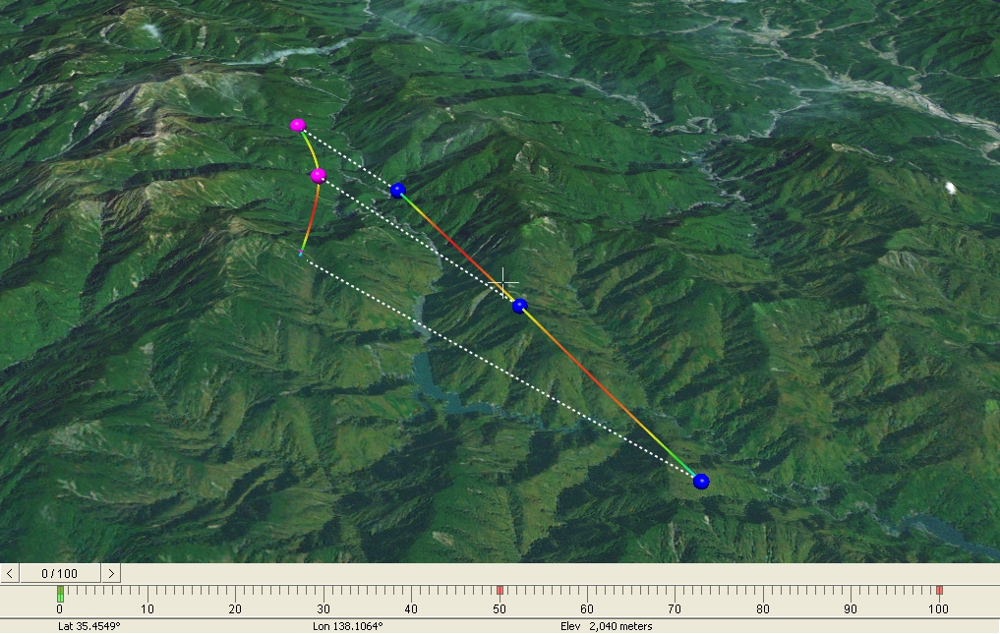
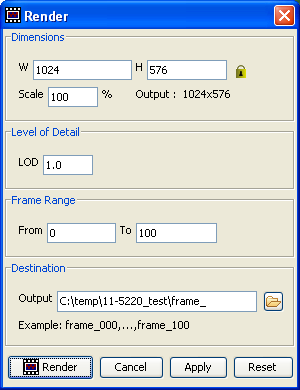

| Author: | Neil Caldwell |
| Version: | Draft |
| Last Modified: | 11/03/2011 |
| History: | See World Wind's SVN Log |
Please note that this is document is a draft. Any and all feedback can be sent to feedback@ga.gov.au and would be greatly appreciated.
The World Wind Animator was written so that Geoscience Australia could create fly-through footage showing geoscience information, for use as a visual communication tool. The animator was developed using Java and NASA's World Wind Java SDK.
The data layers used by the Animator can be rather large; Each can take up several Terabytes of space. As such the default data sets are stored on remote servers, located at Geoscience Australia and NASA. The World Wind Animator only accesses the data as it needs to, pulling the required data down over the network and caching it on the local computer as the camera brings it into view.
Objects within a scene have parameters that can be animated, using the concept of a keyframe to change the parameters values over time. Objects include the camera; the layers that make up the ground image; the sky; and the elevation layer that controls the height of the surface. Parameters differ from object to object, but examples include a camera's positional parameters and a layers opacity, each of these can be animated, so as to fade between layers or change the height of a mountain.
Visually, the dominant feature of the Animator is the viewport. On opening it should display a view of the earth from space. The viewport shows the camera's current view. To the left of the viewport is a panel containing three rollouts: The Animation Browser, a list of all objects in the animation; Parameters, a rollout that displays all of the selected objects Parameters; and Layer Palette, a list of all of the standard layers that can be added into the scene. These are used to interact with layers. Below the viewport is the time slider: a drag bar marking a position on a number line. This is used to mark the time a Parameter changes, while animating.
The viewport has crosshairs in the centre. These mark the target location on the ground, where the camera is looking. In order to move that location, drag the mouse around the viewport while holding the left mouse button down. The target will move along the surface of the ground. This can also be achieved with the arrow buttons on the keyboard. Clicking on a place will cause the camera to pan to centre on it.
Zooming can be achieved in two ways. First, the mouse wheel can be rotated, moving the camera toward or away from the earth in increments. Holding the mouse wheel down while moving the mouse up and down will zoom the camera smoothly, forward and backward.
To change the angle of the camera, hold the right mouse button down and drag the mouse around the viewport. Doing this will rotate the camera around the target, which is marked by the crosshairs in middle of the viewport.
There are several overlays which may be visible on the viewport. The camera target crosshairs, the grid and the rule of thirds. These can be turned on or off in the Animation menu.
When resizing the window, the viewport will not deform; The rendered image will always keep its aspect ratio. If the window is expanded, it will leave empty space, which can create a letterbox effect on screen. It is also impossible to shrink the window past the render size. There is a Resize to render dimensions option in the Animation menu. This shrinks the window back to the correct size and aspect ratio.
In the World Wind Animator the earth is made up of different layers. The top rollout in the side panel, labelled Animation Browser, contains a list of the different objects within the scene that make up the animation.
Each item, listed in the Animation Browser, has two or three buttons, an icon and a name:
The animation browser has its own toolbar, at the top of the rollout. It allows the removal of an object from the list; Repositioning of an object in the list; The mass enabling/disabling and arming/disarming of objects.
The order of layers objects affects how they are displayed. Items higher in the list are displayed before items further down the list. For example, by default the layer Landsat is below the layer Blue Marble in the list, so it will be displayed above the Blue Marble layer when it is available. The Landsat layer only shows up at lower altitudes (below about 600km).
Objects can have multiple Parameters. For example, the camera has at least six different Parameters. When an object is selected in the animation browser, any Parameters it has are displayed in the Parameters rollout. If the object is itself a Parameter, then it is displayed in the Parameters rollout. Changes to the Parameters values can be animated.
Layers are specified in XML files. They contain information about the layer's type, where to get any data and how to interpret any data referenced. New layers can either be added to the scene by dragging a layer file into the Animation Browser, or through the Layer Palette.
The layer palette, bellow the Parameters rollout, contains a list of known layers that can be added to the animation. The layers currently in the scene are marked with a yellow flag. In order to add a layer to the animation, there is a green plus button to the right of the rollouts toolbar, directly above the scrollbar on the right. The red x in the layer palette toolbar removes layers from the pallet, not from the scene. The box with the arrow pointing into it is the add layer button, which adds a layer to the palette from an XML layer file.
The Web Map Service (WMS) is an open standard for georeferenced maps. The WMS Browser can be used to find new layers, and get the data from an external server. The browser contains three windows: A list of known servers; a description and a preview window. When you expand a server in the list, it will display all the layers that are available on that server. Selecting one of them will load a description and information about that layer, and an image preview in the preview window.
In order to find a new server, there is a green plus sign on the WMS Server list toolbar. Clicking on it brings up a search window; Along with some instructions it has a search bar and a results window. A query can either be made of different terms or of a direct URL to a server. Any results have a name, URL and description of the service provided by the server. To add the servers to the list, check them with the checkbox on the left, and press Ok. There are check all and check none buttons in the bottom left corner.
The layers provided by a server can not be imported directly into an animation. First, they must be saved as layers. Selecting a layer will activate the save button on the list panel. Once the layer has been saved as an XML file, it can be added into the the scene as described in the previous sections.
Elevation ModelsThe World Wind Animator also supports Digital Elevation Models (DEM). These are used to deform the terrain model, causing mountain ranges to appear according to the data. In the Animation Browser, these can be seen as children of the Elevation Object. By default, there is only one DEM applied to the scene's elevation: Earth, a DEM provided by NASA that covers all the terrain on the planet.
The DEM files that are recognised by the animator are part of the XML layer file specification. In the animation menu there is an Add elevation model... option. Once a file has been loaded into the animator, the model will be listed in the Animation Browser and the terrain will be updated.
In order to increase or decrease the vertical scale, an Exaggeration Parameters may be added to the elevation object. They can be added with the Animation → Add elevation exaggerator... A new dialog will pop up and ask for a Boundary and an Exaggeration; A Boundary is the height at which the Exaggeration Parameter will be applied, and the exaggeration is the amount of exaggeration to apply, where 1.0 is normal, 0.0 is flat and 2.0 is double.
Multiple Exaggerators can be applied to the Elevation Object . An exaggerator applies it's amount of exaggeration to the terrain points from it's boundary. If an exaggerator states that from 100.00m, the terrain will be exaggerated by 2.0, all the terrain points that are above 100.00m above sea level will have their position doubled. However, Exaggerators always work from the original value, so if there is then another exaggerator that states that from 200.00m, all the terrain will be exaggerated by 1.0, all terrain points that were originally above 200.00m will be set back to their regular scale. This means that the exaggerated terrain will look the way it did, but it will be raised 200.00m, by the first exaggerator.
Animation is done by keyframing changes to parameters. Moving the camera changes its positional parameters. The timeline at the bottom of the camera viewport displays the keyframes that make up the animation.
The World Wind Animator supports keyframes; Specific frames which determine the overall animation. By default the timeslider only has one hundred frames. The number can be changed with the Set frame count... dialog, found in the Frame menu.
The insert button on the keyboard, or the Frame → Add key menu item, inserts a new keyframe for all armed objects. If an object is armed, the arm button will be green, any keyframe that can be applied to it will be. Unarmed objects, which have a red arm button, do not recieve keyframes. There is also an Auto key option in the Frame menu. While this is active, all changes made will to any armed parameters will automatically be keyed to the current frame.
Most of the animation within the animator will revolve around layer parameters. Most layers have an opacity layer, which is a value between 0 and 1 that represents how transparent or visible the layer is. In order to add a keyframe modifying a parameter, change the parameter and then add the new keyframe. The view may not update with the changes to the parameter until the the keyframe has been added.
Each keyframe will visibly appear on the timeslider as a red rectangle, marking which frames are keyed. These frames can be dragged along the time line, underneath the timeslider. Frames can also be copied. When the time slider is on a frame, the frame is highlighted blue. If the slider is on a keyframe, then the frame is highlighted green. While the timeslider is on a keyframe, it can be copied with the Frame → Copy menu option or the by pressing Ctrl+C. The Frame → Copy option or the Ctrl+V keyboard shortcut will then paste the copied frame to the current frame.
The number of frames an animation takes up can be changed. The Scale animation... option opens a dialog box that requests a scale factor. The default number, 1.0, is equivalent to 100%. If a larger number is given the animation is stretched out over a larger number of frames. If the number is smaller, then the animation is shrunk. 0.5 is equivalent to half, or 50%, and 2.0 is double, or 200% of the current number of frames. This does not change the number of frames in the animation.
The animation can be played back by pressing the spacebar or using the Preview option in the animation menu. The animation will play back the animation in the viewport, from the current position to the end. There are also preview x2 and preview x10 option. In addition to moving the timeslider to different frames, there are also Previous, Next, First and Last options, in the frame menu. First and Last are mapped to Period (.), Comma (,). Using shift as well gives First and Last keybindings. The Ctrl key causes them to jump by ten frames.
The camera is an animatable object within the scene. It is made up of an Eye, the camera itself, and a Look At Target. The Look At Target is always aligned to the ground, and the camera rotates around it. Both the Eye and Target have latitude, longitude and zoom parameters. Additional parameters controlling stereo cameras and clipping can be added from the animation menu. The Camera can be moved as described in the Interface chapter, or the parameters can be manually changed.
When a keyframe has been added to the camera, the camera's position becomes visible in the viewport. Immediately after a keyframe has been inserted, a pink dot will appear in the centre of the crosshairs. If the viewport is moved away from the camera's position, two dots, a blue and a pink one, should be visible. They will be joined by a dotted line. The blue dot represents the camera's eye, while the pink dot represents the target. The camera path can be turned off in the Animation menu.
When the camera has multiple keyframes, they will all be visible within the viewport, joined together by lines showing their trajectories. The lines colour will vary between blue, where the movement is slow, and red, where the movement is quick.
In the Animation menu, there is a Smooth eye speed option. It adjusts all of the eye's keyframes in order to smooth the time between each point. To do this it will slightly change the frame positions and curves belonging to a key.
To edit keyframes, the position of the camera can be changed by either moving the camera and pressing the insert button, or by grabbing and moving the visual representation. You can grab both the camera and the target using the left mouse button and change their latitude and longitude, or with the right mouse button and change their height (the zoom parameter).
The parameter editor, found in the Window menu or by clicking Ctrl+P, shows the changes made to parameters between different keyframes as a graph. On the left is a list of all the parameters in the scene that can be displayed. The gray area to the right displays a graph, once a parameter is selected.
The line represents the value of the parameter, and each point along it is a keyframe. Each keyframe has one or two lines coming off it, each with its own handle. These lines are bezier handles. Moving them affects the curve of the line between the keys. By default each bezier handle controls both the input and the output direction of the key. This can be changed by right clicking on the key and choosing bezier (unlocked). There is also a linear option, which takes the input and sends the output directly toward the previous/next key.
There are two lines that go vertical across all open graphs. The red line is positioned at the current frame and the blue line is the closest frame to the current mouse position. The parameters values at those points are shown at the bottom right of the graph.
Navigating a graph can be done by holding down the mouse wheel (middle mouse button) and dragging the mouse around a graph. Rotating the wheel while the mouse is over one of the graphs zooms within that graph. In order to stay in line, all the graphs will zoom and pan together if necessary. Holding down shift or control while zooming will zoom in only the value or time axises.
Rendering is the process of creating a final film. In the animation menu, there are three options: Render, Quick Render (detailed) and Quick Render (preview). The Quick Render functions ask for a filename, if one has not been set, and then render an image set from the current frame to the end of the range. If they already have a destination filename then the quick render will just overwrite existing files. The render button opens a dialog which asks for Dimensions, Level of Detail, Frame Range and destination.
The dimensions of the image to render are in pixels, and also correspond to the size of the animator viewport. If set to 640 by 480, then the viewport will shrink to that size when the render button is pressed. By default, the aspect ratio is locked, so that when either the width or height is changed, the other will change as well. The scale changes the output size. The render size is displayed next to the scale box.
The level of detail (LOD) setting determines at what distance which LOD will be displayed. The terrain is generated by similarly to applying a hightmap to a mesh. As the camera gets closer to the terrain, the geometry gets more detailed. The LOD setting modifies the distance used to modify the terrain. The higher the number, the more detailed the mesh will be at any given distance.
The World Wind Animator currently only renders out image sets. The output field in the destination panel points to the common prefix of each image. If the output reads c:\temp\camera\frame_ and you are rendering a hundred frames, then each frame will be rendered in c:\temp\camera\ as frame_001.tga, frame_002.tga... Any non-existing directories listed in the output will be created. If a full path is not specified, it will attempt to save the files in the directory that the animator is run from.
The illusion of a 3D image is commonly created in film with stereoscopic footage: Two separate images or film channels that are created from two slightly different eye positions, in order to the separation between the human eyes in binocular vision. The World Wind Animator allows rendering of stereoscopic footage, rendering from two extra cameras on either side of the one used for the viewport. To use the stereoscopic cameras, select the Use stereo camera option from the animation menu. This will add two new parameters to the camera: Focal Length and Eye Separation.
The Focal Length is the point in front of the camera that the two camera's lines of sight converge, and then Eye Separation is the distance between the two eyes. These two parameters can be edited as per other parameters, but there is also a Dynamic Stereo parameters option in the Animation menu, which is checked by default. It attempts to animate the parameters dynamically according to the position of terrain in order to keep the focus sane.
When setting file names for the stereo projection, it creates two directories using the prefix with _left and _right, and separates the video channels into these directories.
| Movement | ||
|---|---|---|
| Pan Camera | Arrow Keys (Up/Down/Left/Right) | |
| zoom | +/- | |
| reset camera rotation | r | |
| Geometry | ||
| Add elevation model | Ctrl+M | |
| Add elevation exaggeration | Ctrl+E | |
| Frames | ||
| Next Frame | Period (.) | |
| Previous Frame | Comma (,) | |
| Next 10 Frames | Shift+Period (.) | |
| Previous 10 Frames | Shift+Comma (,) | |
| First Frame | Ctrl+Period (.) | |
| Last Frame | Ctrl+Comma (,) | |
| Create Keyframe | Insert | |
| Delete Current Keyframe | Delete | |
| Copy Current Keyframe | Ctrl+c | |
| Cut Current Keyframe | Ctrl+x | |
| Paste Key to Current Frame | Ctrl+v | |
| Preview Animation | Space | |
| Preview Animation x2 | Shift+Space | |
| Preview Animation x10 | Ctrl+Space | |
| Render | ||
| Render Dialog | Ctrl+r | |
| Quick Render (detailed) | Ctrl+Shift+r | |
| Window | ||
| Parameter Browser | Ctrl+p | |
| Parameter Browser | Ctrl+w |
{kind=link}